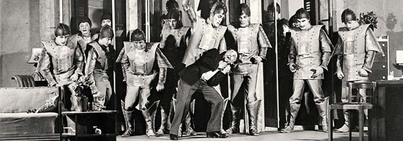
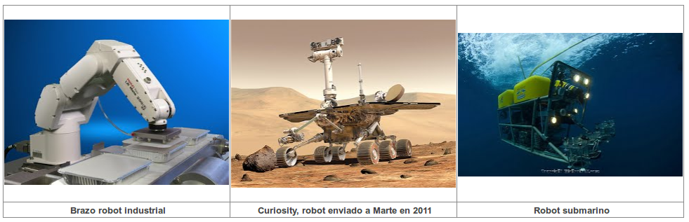

En la actualidad se siguen utilizando herramientas, máquinas y automatismos, pero cada vez más se van sustituyendo por robots, por ser más cómodos para las personas. Pero, ¿qué es un robot?
La palabra robot fue usada por primera vez en el año 1921, cuando el escritor checo Karel Capek estrenó en el teatro nacional de Praga su obra Rossum's Universal Robot.

El término "robot" proviene de la palabra eslava "robota", que se refiere al trabajo realizado de manera forzada.
La obra trata sobre un inventor que fabrica robots humanoides para hacerles trabajar como esclavos, finalmente los robots se revelan contra él y lo asesinan.
La palabra robot está a la orden del día y muchas veces al escucharla nos imaginamos una máquina con forma humana que camina, habla, gesticula... pero en realidad es algo más complicado de definir.
La definición de robot podría ser la siguiente:
| Un robot es una máquina automática programable que es capaz de interpretar información del medio físico para modificar su conducta. Es decir, tiene la capacidad de interactuar con el entorno y en función de ello, realizar unas funciones u otras. |
La robótica: la ciencia de los robots
El término "Robótica" fue acuñado por Isaac Asimov para describir la tecnología de los robots. Él mismo predijo hace años el aumento de una poderosa industria robótica, predicción que ya se ha hecho realidad. Recientemente se ha producido una explosión en el desarrollo y uso industrial de los robots tal que se ha llegado al punto de hablar de "revolución de los robots" y "era de los robots".
Podemos definir el significado de la robótica como una ciencia que aglutina varias ramas tecnológicas (como la mecánica, la electrónica, la informática, la inteligencia artificial y la ingeniería de control, entre otras), con el objetivo de diseñar máquinas que sean capaces de realizar tareas automatizadas o de simular el comportamiento humano o animal, en función de la capacidad de su software.
Sus principales objetivos son abaratar los costes de producción y realizar tareas tediosas o peligrosas, y aunque hasta hace pocos años únicamente los veíamos en el sector industrial automatizando puestos de trabajo, ahora también disfrutamos de los robots en hoteles, bares, bancos, consultas médicas, ejerciendo de policías o en catástrofes naturales.

Si todavía no te has decidido por tus estudios futuros, la robótica es una disciplina que está en auge actualmente y que tiene un gran futuro.
 Desde siempre, el ser humano ha buscado la manera de hacer su vida más fácil, para ello ha ido inventando artilugios a lo largo de la Historia cada vez más sofisticados.
Desde siempre, el ser humano ha buscado la manera de hacer su vida más fácil, para ello ha ido inventando artilugios a lo largo de la Historia cada vez más sofisticados.